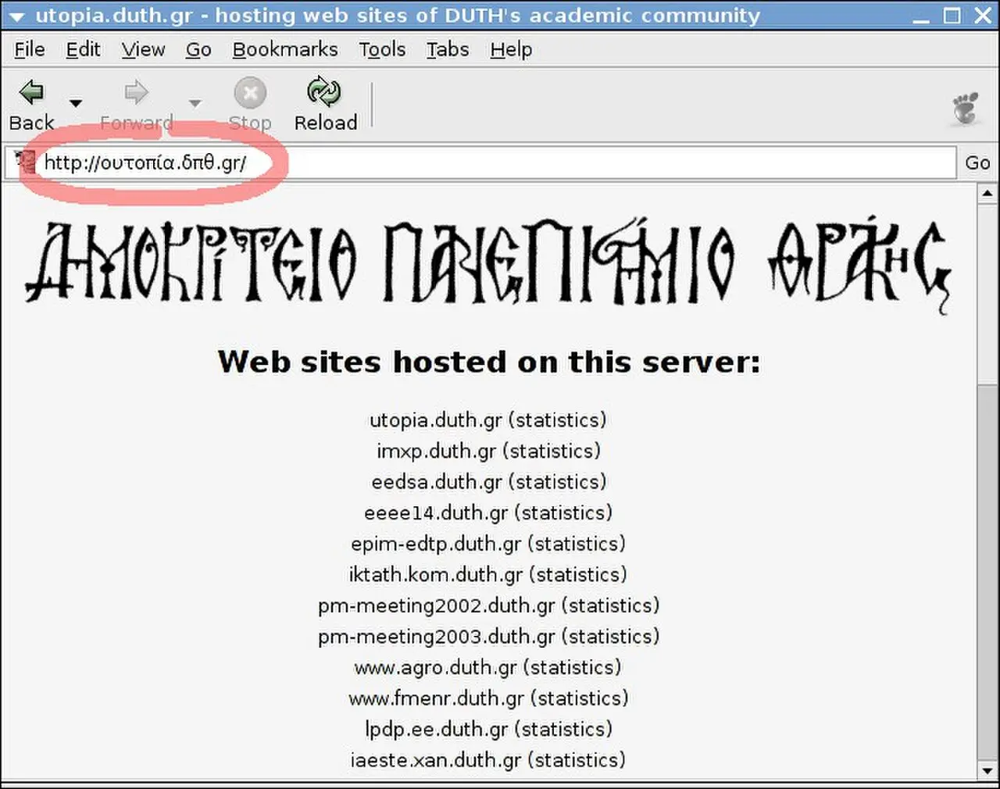

Short answer
An internationalized domain name is one host that can be shown in Unicode and also written in an ASCII form.
The screenshot circles an address that uses Greek letters, on a page that also lists other hosts in Latin letters. The circle is the lesson: the visible host and the encoded host are two spellings. SEO Health wants one canonical spelling in links, the sitemap, and the canonical element. It does not treat the list of hosts on that old page as a set of sites to copy, and it does not read the circle as a ranking.
Definition
The ASCII form is often the punycode spelling that DNS actually resolves. Browsers may show the Unicode form. If internal links mix the two, you have two URL strings for one document. Redirect one to the other in a single hop, and put only the chosen form in the sitemap. A host that looks like a trusted name but uses different characters is a separate security problem. The health check here is consistency of the host you own, not a promise about how a browser draws the letters.
How this affects the indexable URL
Choose one host spelling and use it in the canonical URL, the sitemap, and internal links.
Redirect the other spelling to the chosen one. Do not list both as if they were two sites. Hreflang is a language signal between documents. It is not the tool that merges a Unicode host with its punycode twin. Fetch both spellings once and confirm one returns the document and the other redirects.

What to check
- One host form in the sitemap and the canonical
- The other form redirected in one hop
- Internal links using the chosen form
- Hreflang not used as a substitute for the redirect
- Both spellings fetched once
A practical example
The marketing site prints the Chinese characters of the company name in some links and the punycode host in the sitemap. Crawlers see two hosts. The repair picks the punycode host as canonical, redirects the other, and regenerates internal links. The circled Greek address in the figure is someone else’s old example. It is not this site’s host and not a result.
What this does not claim
One host spelling does not guarantee rankings or citations.
Where Mika Visibility files this
Mika Visibility treats the preferred URL as an SEO Health signal. Canonicals, duplicates, and sitemap mismatches are recorded with sample URLs. They do not predict a ranking. SEO Growth asks whether the preferred URL actually covers an intent. Those questions stay on separate scales.
The circled address is an example of two ways to write a host. It is not a site to imitate line by line.
FAQ
What is an internationalized domain name?
An internationalized domain name is one host that can be shown in Unicode and also written in an ASCII form.
Which spelling should links use?
Choose one host spelling and use it in the canonical URL, the sitemap, and internal links.
Does one host spelling guarantee rankings?
One host spelling does not guarantee rankings or citations.
Next step
Run a structured SEO + GEO audit to see health findings, growth gaps, and a blueprint you can act on.
Clearer entities, answers, evidence, and context make pages easier to understand and reference. Results in any answer product are not guaranteed.